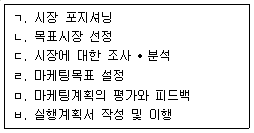
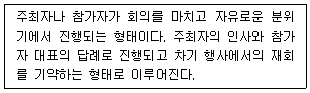
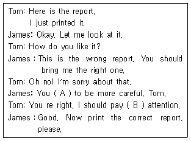
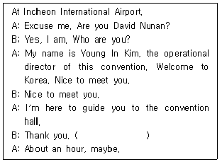
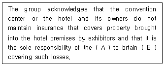
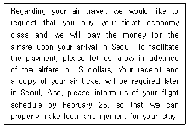
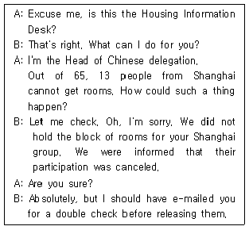
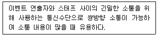
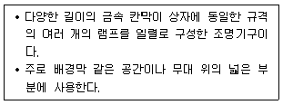

컨벤션기획사-2급 (2022-04-24 기출문제)
1과목: 컨벤션 기획
1. 전략적 포지셔닝 추진 시 사용되는 마이클 포터의 6가지 원칙에 대한 설명으로 옳지 않은 것은?
- 사용하는 전략적 요소는 서로 종속관계 (dependency)가 있음을 인식한다.
- 명확한 목표(right goal)를 가지고 시작해야 한다.
- 뚜렷하게 구별되는 가치사슬(value chain)에 반영되어야 한다.
- 연속적인 전략적 방향(continuity)을 가지고 추진되어야 한다.
(정답률: 알수없음)

2. 컨벤션 마케팅 전략의 수립을 위해 외부환경과 내부환경을 분석하여 강점과 약점, 기회와 위협요인을 도출하고, 이에 대한 대처방안을 마련하기 위한 분석방법은?
- 수요 분석
- SWOT 분석
- BCG Matrix 분석
- 수입과 지출 분석
(정답률: 알수없음)
3. 컨퍼런스 및 컨벤션과 유사한 의미로 사용되며, 주로 대규모 국제회의를 일컫는 용어로 유럽이나 영국식 영어권에서 주로 사용되는 것은?
- 포럼 (forum)
- 세미나(semina)
- 컨그레스(congress)
- 심포지엄 (symposium)
(정답률: 알수없음)
4. 다음 컨벤션 마케팅의 절차를 올바른 순서대로 나열한 것은?

- ㄱ → ㄴ → ㄹ → ㄷ → ㅂ → ㅁ
- ㄷ → ㄴ → ㄱ → ㄹ → ㅂ → ㅁ
- ㄴ → ㄱ → ㄷ → ㄹ → ㅁ → ㅂ
- ㄹ → ㄱ → ㄴ → ㄷ → ㅁ → ㅂ
(정답률: 알수없음)
5. 학술회의 준비와 관련하여 논문 접수 관리에 대한 내용으로 가장 거리가 먼 것은?
- 예상 참가자들을 대상으로 논문 제출 안내문을 발송하여 논문을 접수받는다.
- 적절한 심사위원들의 심사를 통해 발표가능 여부 등으로 채택된 논문을 결정한다.
- 통상적으로 학술회의 개최 2개월 전부터 접수를 진행한다.
- 발표 시 필요한 기자재에 대한 신청을 받는다.
(정답률: 알수없음)
6. 국제출판협회 컨벤션의 매출액과 지출비용은 각각 $1200000과 $800000 이다. 이 행사의 투자수익률은?
- 33%
- 50%
- 60%
- 66%
(정답률: 알수없음)
7. 우리나라 컨벤션 산업와 강점으로 보기 어려운 것은?
- 국제사회의 위상강화 및 IT 산업 강국의 이미지
- 동북아 거점 지역에 위치한 관계적 위치
- 저렴하면서 풍부한 숙박시설 인프라
- 전문적이고 대형의 컨벤션 센터 및 전시장 개관
(정답률: 알수없음)
8. 유럽 중심의 각종 국제기구, 협회, 단체의 연맹으로서 컨벤션 정보를 수집하고, 각종 정보자료를 수록한 연감 등 책자 발간을 주요사업으로 하는 국제기구는?
- Meeting Professionals International
- Union of International Association
- American Society of Association Executives
- Professionals Convention Management Association
(정답률: 알수없음)
9. 국제회의 개최예산을 편성하는 데 있어서 예비비를 산정할 경우 다음 중 가장 중요하게 고려해야 하는 항목은?
- 장소 임차비
- PCO 인건비
- 인쇄 및 제작물 비용
- 식음료비 및 초청경비
(정답률: 알수없음)
10. 국제회의산업 육성에 관한 법령에 따라 국제회의도시의 지정기준으로 틀린 것은?
- 지정대상 도시에 국제회의시설이 있고, 해당 특별시 · 광역시 또는 시에서 이를 활용한 국제회의산업 육성에 관한 계획을 수립하고 있을 것
- 지정대상 도시에 숙박시설 · 교통시설 · 교통안내체계 등 국제회의 참가자를 위한 편의시설이 갖추어져 있을 것
- 당해 기준 최근 5년 동안 2회 이상의 국제회의 유치 · 개최 실적을 가지고 있을 것
- 지정대상 도시 또는 그 주변에 풍부한 관광자원이 있을 것
(정답률: 알수없음)
11. 컨벤션 개최지 선정 이전에 실시되어야 할 업무내용으로 가장 거리가 먼 것은?
- 홍보물 제작
- 예산 검토
- 프로그램 초안 작성
- 참가자의 욕구분석
(정답률: 알수없음)
12. 다음 중 컨벤션 홍보매체의 종류로 볼 수 없는 것은?
- Brochure
- Flyer
- DM
- Simulcast
(정답률: 알수없음)
13. 국제회의산업 육성에 관한 법령에 따라 국제회의복합지구 지정 요건으로 옳지 않은 것은?
- 국제회의복합지구 지정 대상 지역 내에 관련 법령에 따른 전문회의시설이 있을 것
- 국제회의복합지구의 지정 면적은 400만 제곱미터 이상일 것
- 국제회의복합지구 지정 대상 지역 내에서 개최된 회의에 참가한 외국인이 국제회의복합지구 지정일이 속한 연도의 전년도 기준 5천명 이상이거나 국제회의복합지구 지정일이 속한 연도의 직전 3년간 평균 5천명 이상일 것
- 국제회의복합지구 지정 대상 지역이나 그 인근 지역에 교통시설 · 교통안내체계 등 편의시설이 갖추어져 있을 것
(정답률: 알수없음)
14. 컨벤션 마케팅믹스 중 촉진믹스에 관한 설명으로 틀린 것은?
- 광고는 비인적 커뮤니케이션 방법이기 때문에 인적판매보다 설득력이 부족하다.
- 판매촉진은 인지도 제고 등 장기적인 목표를 달성하기 위한 투자가 대부분이다.
- 광고는 지역적으로 넓게 분산되어 있는 소비자들에 대한 촉진이 가능하다는 특성이 있다.
- PR은 촉진수단으로서 뉴스, 행사 등을 활용하기 때문에 광고보다 신뢰성이 좋다.
(정답률: 알수없음)
15. 회의의 가장 중심이 되는 초청연사가 강연하는 회의로 참가자 전원이 참석하는 회의 진행방법은?
- Plenary session
- Breakout session
- Poster session
- Concurrent session
(정답률: 알수없음)
16. 국제회의 단계별 홍보계획에 있어서 First Announcement의 내용으로 적합하지 않은 것은?
- 회의 기간
- 회의 개최지
- 논제 및 연설자
- Retern Slip/Reply Card
(정답률: 알수없음)
17. 국제적인 컨벤션 행사를 기획하는 기획사가 갖추어야 할 자질과 가장 거리가 먼 것은?
- 다른 나라의 문화에 대한 풍부한 지식을 갖추고 있어야 한다.
- 외국어를 구사할 수 있어야 한다.
- 리더십이 있으면서 대인관계가 원만해야 한다.
- 컨벤션 행사에 필요한 자금 동원 능력이 탁월해야 한다.
(정답률: 알수없음)
18. 컨벤션 마케팅시장 세분화에 있어서 인구통계학적 변수에 해당되지 않는 것은?
- 연령
- 결혼여부
- 라이프스타일
- 가족수명주기
(정답률: 알수없음)
19. 컨벤션 행사종료 후 컨벤션 서비스의 평가를 실시하는데, 다음 중 컨벤션 서비스 평가 내용에 포함될 항목으로 가장 거리가 먼 것은?
- 컨벤션 참석자의 자질 평가
- 프로그램에 대한 평가
- 회의 개최지의 시설 및 서비스에 대한 평가
- 연예, 오락, 사교행사, 관광 등 부대행사에 관한 평가
(정답률: 알수없음)
20. 전시회의 프로모션 유형별 장, 단점에 대한 설명으로 옳지 않은 것은?
- 부스 내 프로모션의 경우, 기념품 제공은 비교적 비용이 많이 소요되나, 리드 창출에 있어서 유리하다.
- 전시장 프로모션의 경우, 전시장 광고는 반복적 노출이 가능하다.
- 개최도시 프로모션에서 게시판 광고는 장소가 제한적이나 광범위하게 노출이 가능하다.
- 전시회 개최 전 프로모션의 경우, 개인 초청은 접촉대상이 제한적이나 친근성이 강하다.
(정답률: 알수없음)
21. 다음 중 전시장 참가기업 매뉴얼에 일반적으로 포함되어있는 내용과 가장 거리가 먼 것은?
- 현재 전시장 도면
- 참가업체 부스 반입 및 반출 일정
- 부스 공간 선호 사항(선호하는 부스를 여러 개 선택 가능하도록 명시)
- 전시 운영과 관련한 전기, 청소, 임차물 등에 관련한 사항
(정답률: 알수없음)
22. 다음이 설명하는 컨벤션 참가자를 위한 사교행사의 형태는?

- 환송연
- 환영리셉션
- 만찬
- 개회식
(정답률: 알수없음)
23. 국제학술대회 시행 후 국제회의 기획가가 결과보고서에 수록할 내용으로 가장 거리가 먼 것은?
- 수입 및 집행 영수증
- 사교행사 등 부대행사 내용
- 각 국가별 또는 주제별 발표논문 수
- 조직위원회, 분과위원회, 사무국의 활동
(정답률: 알수없음)
24. 연사가 연단에서 자유롭게 활동하면서 강연하고자 할 경우 준비해야 할 마이크로폰의 종류는?
- Podium Microphones
- Table Microphones
- Lectern Microphones
- Lavalier Microphones
(정답률: 알수없음)
25. 학술회의의 경우 사전에 발표할 논문을 모집하기 위해 발송하는 논문모집 공고(안내)를 뜻하는 용어는?
- Call for Paper
- Abstract
- Manuscript
- Full paper
(정답률: 알수없음)
26. 통상적으로 매년 1월 미국 라스베이거스에서 개최되며，미국 소비자 기술협회가 주관하는 세계적인 규모의 전자제품 전시회는?
- CES
- EXPO
- IFA
- MWC
(정답률: 알수없음)
27. 다음 중 컨벤션뷰로(CVB)의 업무와 가장 거리가 먼 것은?
- 컨벤션시설이나 숙박시설에 관한 정보제공
- 상설 컨벤션 단체나 국제회의 관련 단체에 관한 조사
- 컨벤션 유치 지원
- 컨벤션의 기획, 운영, 평가 총괄 실시
(정답률: 알수없음)
28. 다음 중 컨벤션 사후관리 업무에 해당되지 않는 것은?
- 참가자 정보관리
- 참가자 만족도 조사
- 사후관리 프로그램 실시
- 행사연계 프로그램 개발
(정답률: 알수없음)
29. 다음 중 컨벤션산업의 이해관계자와 관련된 설명으로 가장 거리가 먼 것은?
- 회의시설은 컨벤션센터와 같은 전통적인 시설과 비행기 격납고, 크루즈선, 체조경기장과 같은 이색적인 비전통적 회의시설로 구분할 수 있다.
- 협회나 학회는 회의 자체를 생성하는 가장 중심적인 주체라 할 수 있다.
- 회의기획자는 회의 기획에서부터 진행, 회의장비 준비, 사후 평가 등 회의의 모든 과정을 운영하는 역할을 한다.
- 호텔은 주로 참가자에게 숙박 및 식음료서비스만을 제공함에 따라 컨벤션센터와 경쟁관계가 아닌 상호 보완관계에 있다.
(정답률: 알수없음)
30. 전시마케팅 개념에 있어서 4C에 해당되지 않는 것은?
- Cost
- Customer
- Comfortable
- Convenience
(정답률: 알수없음)
2과목: 컨벤션 운영
31. 국기의 게양에 관한 설명으로 틀린 것은?
- 각종 차량에는 그 전면을 앞에서 바라보아 왼쪽에 국기를 게양한다.
- 건물 안의 회의장 등에서 전면을 앞에서 바라보아 그 전면의 중앙 또는 오른쪽에 국기를 게양한다.
- 건물에는 앞에서 바라보아 지면의 중앙이나 왼쪽, 옥상의 중앙, 현관의 차양시설 위 중앙 또는 주된 출입구의 위 벽면 중앙에 국기를 게양한다.
- 국기와 외국기를 교차시켜 게양하는 경우에는 앞에서 바라보아국기의 깃면이 왼쪽에 오도록 하고, 그 깃대는 외국기의 깃대 앞쪽에 오도록 한다.
(정답률: 알수없음)
32. 회의 프로그램 운영계획을 수립하고자 할 때 포함되지 않은 사항은?
- 진행 방식
- 회의 형태
- 프로그램 평가
- 시간 배정
(정답률: 알수없음)
33. 컨벤션의 운영인력 모집 공고 항목에 반드시 기입되지 않아도 되는 것은?
- 운영 예산
- 근무시간 및 장소
- 급여 기준
- 선발 기준(우선순위 능력)
(정답률: 알수없음)
34. 괄호 안의 A, B에 순서대로 들어갈 것은?

- A: might, B:deeply
- A: must, B:look
- A: should, B:deep
- A: ought, B:closer
(정답률: 알수없음)
35. 여행상품의 가격 (Tour cost)에 포함된 내용으로 가장 거리가 먼 것은?
- 여권수속비와 비자요금
- 여정표의 작성과 선전에 소요되는 각종 인쇄비와 광고비
- 여행보험비, 출발 및 귀로 시에 공항과 사무실 간의 교통비
- 투어 에스코트(Tour Escort)의 항공운임과 육상이동에서 소요되는 제반경비
(정답률: 알수없음)
36. 회의기획 시 의전업무와 관련되는 사항이 아닌 것은?
- 참가자 출입국 절차 확인
- 공항이용에 따른 이동계획 수립
- 행사 안전요원 배치
- 프레스센터 운영
(정답률: 알수없음)
37. 회의규모에 따라 행사의 포함여부가 결정되지만 회의에 참가한 모든 인원(동반자 포함)이 참가할 수 있는 관광으로 종일 또는 반일 관광으로 기획되는 관광프로그램은?
- Excursion
- Fam Tour
- Pre-Congress Tour
- Post-Congress Tour
(정답률: 알수없음)
38. 다음 ( )에 적절한 것은?

- How much will it take?
- How long will it take?
- How long will you stay?
- What are going to do now?
(정답률: 알수없음)
39. 컨벤션 참가자의 등록절차 수립방향으로 가장 옳지 않은 것은?
- 간편한 등록절차를 통해 참가자의 편의를 도모해야 한다.
- 참가자들에게 도움이 되는 수교물 지급과 환대 서비스는 효율성 있게 계획되어야 한다.
- 참가자의 등록 데이터를 체계적으로 관리하여 입 · 출국, 회의 참석, 동반자 관광 서비스 등의 업무 효율을 높여야 한다.
- 정확한 등록 확인을 위해 2회 이상 컨벤션 등록 확인 절차를 거치도록 한다.
(정답률: 알수없음)
40. 컨벤션 연회 행사에 대한 초청장을 발송 후 “참석여부를 알려줄 것”을 요청하는 국제적으로 통용되어지고 있는 표현은?
- IHO
- SGMP
- ASAP
- RSVP
(정답률: 알수없음)
41. 주최기관과 행사보험 가입 여부를 논의할 시 고려사항에 대한 설명으로 옳지 않은 것은?
- 동일 개최시설에서 개최된 행사의 보험 가입 사례를 분석한다.
- 보험 가입을 위해 예산의 범위와 관계없이 전차대회 예산서만을 검토하여 산정한다.
- 유사 규모 및 유사 성격의 행사보험 가입 관련 사례를 분석한다.
- 전차 대회 결과보고서 내의 보험 관련 내용을 참고한다.
(정답률: 알수없음)
42. 참가자들의 출입통제를 위해 사용되는 시스템의 일종으로 국가 간이나 정상회의 같은 높은 등급의 보안을 요구할 시 사용되는 시스템으로 가장 적당한 것은?
- Bar Code System
- QR Code System
- Facial Recognition System
- ID Card System
(정답률: 알수없음)
43. 국제회의 업무를 수행하는 인력을 크게 전담인력, 현장 운영 인력, 전문 인력으로 구분할 때 전문 인력에 해당하지 않는 것은?
- 동시통역사
- 사회자
- A/V기술자
- 안내데스크 상주인력
(정답률: 알수없음)
44. 연회행사 중 여러 가지의 주류와 음료를 주제로 하고 오르되브르(hors d’oeuvre)를 곁들이면서 스탠딩(standing) 형식으로 행해지는 연회는?
- 정찬파티
- 뷔페파티
- 칵테일파티
- 티파티
(정답률: 알수없음)
45. 컨벤션 기획을 크게 기본 계획과 운영 계획으로 구분 할 때 운영 계획에 해당하는 것으로 가장 적합한 것은?
- 회의 내용
- 주최자 분석
- 참가대상 및 행사규모
- 개최장소 및 시기
(정답률: 알수없음)
46. 컨벤션 운영인력들이 참가자들의 개인정보 수집 시 정보 주체자에게 알려야 할 사항이 아닌 것은?
- 경보 주체자의 의무
- 개인정보의 수집 · 이용 목적
- 정보 주체자의 개인정보 항목
- 정보 주체자의 개인정보 보유 및 이용 기간
(정답률: 알수없음)
47. 다음 ( ) 안에 들어갈 단어로 각각 알맞은 것은?

- A: insurance, B: exhibitor
- A： exhibitor, B： insurance
- A: exhibitor, B: insure
- A: meeting planner, B: responsible
(정답률: 알수없음)
48. 호텔 연회가 일반 레스토랑 등의 연회와는 다른 특성이 몇 가지 있는데，다음 중 호텔 연회의 특성에 속하지 않는 것은?
- 비교적 대량의 인원을 수용하여 식음료를 서비스 할 수 있다.
- 호텔 연회장은 사전 예상이 필수이며, 다량의 식음료 서비스를 위해서는 사전 예약이 필요하다.
- 각기 다른 참석자들의 요구를 충족시킬 수 있도록 참석자별로 다양한 메뉴와 서비스를 제공할 수 있다.
- 영업시간이 일정하지 않고, 메뉴, 행사 종류, 고객과의 협의 사항에 따라 가변성이 높다.
(정답률: 알수없음)
49. 수송운영 계획 수립 시 수송 대책에 포함되어야 할 사항으로 가장 거리가 먼 것은?
- 행선지 안내 표지판 준비
- 행사지 주차장 공간 확보 요청
- 숙박시설 예약 대행
- 수송 안내 요원 확보
(정답률: 알수없음)
50. 컨벤션 마케팅의 제작물 유형으로 특성을 살리기 위해 브랜딩 디자인을 하게 되는데 컨벤션의 심벌, 로고, 엠블렘, 휘장 같은 형식으로 제작하는 포괄적인 디자인 유형이다. 컨벤션의 브랜드 디자인을 일컫; 용어로 옳은 것은?
- BI (Brand Identity)
- DI (Design Identity)
- EI (Event Identity)
- CI (Company Identity)
(정답률: 알수없음)
51. 고객의 불만제기에 대한 직원의 적절한 대응이 아닌 것은?
- This steak is underdone. - I will ask the chef to cook it more.
- My knife is dirty. - I will turn it down.
- The music is too loud. - I will see if I can fix it for you.
- Our wine isn’t cold enough. - I will get you an ice bucket.
(정답률: 알수없음)
52. 호텔고객 중 스키퍼(Skipper)에 대한 설명으로 옳은 것은?
- 호텔의 객실, 레스토랑, 기타 부대시설의 서비스를 제공 받고 요금을 지불하지 않고 떠난 손님
- 호텔의 객실,레스토랑, 기타 부대시설의 서비스를 예약하고 나타나지 않은 손님
- 예약 없이 호텔의 객실, 레스토랑, 기타 부대시설을 이용한 손님
- 호텔의 객실,레스토랑, 기타 부대시설을 자주 이용하는 손님
(정답률: 알수없음)
53. 호텔 객실점유율에 관한 설명으로 가장 적합한 것은?
- 객실 판매 촉진을 위한 할인 제도이다.
- 호텔경영 성공, 위한 기본측정으로서 매출액, 인력관리, 영업성과 등과 관련된 주요한 자료이다.
- 호텔과 거래가 많은 개인, 기업, 여행사들을 위해 시간제한이나 보증금 없이 예약을 받아주는 상호 협약이다.
- 객실에서 확실한 이윤을 창출하는 방법으로 다른 운영 부서에 적용할 때 이익을 창출하는 중요한 수단이다.
(정답률: 알수없음)
54. 밑줄 친 부분과 의미가 같은 것은?

- endorse
- reimburse
- refurbish
- discount
(정답률: 알수없음)
55. 다음 대화에 관한 설명으로 옳은 것은?

- 중국 참가자 단장과 숙박안내요원간의 전화통화 후 문제점을 해결하였다.
- 상해에서 온 참가자들의 객실예약이 취소되어 객실을 구할 수 없었다.
- 숙박안내요원이 중국 측 참가자들의 객실을 이중으로 예약해 두었다.
- 중국 측에서 상해참가자들의 숙박에 대해 이메일로 요청했었다.
(정답률: 알수없음)
56. 컨벤션 회의장의 장소 선정 시 접근성을 고려하여 선정해야 한다. 국내 회의가 아닌 국제 회의인 경우 장소 선정에 있어서 고려 대상 우선순위가 높은 항목은?
- 지하철 등 근거리 대중교통의 접근 용이성
- 공항과의 거리 및 공항과 이동 수단
- 기차역, 고속터미널과의 거리
- 해안 및 항만과의 교통 편의성
(정답률: 알수없음)
57. C호텔의 연회장 뷔페는 최소 인원 50명을 기준으로 하고 있으며, 단가는 40000원이다. 그런데 주최 측에서 40명으로 뷔페를 하고자 하였을 경우 1인당 객단가는 얼마를 받으면 되는가?
- 80000원
- 70000원
- 40000원
- 50000원
(정답률: 알수없음)
58. 컨벤션 참가자의 출입관리 시스템 구축 시 고려대상과 가장 거리가 먼 것은?
- 프로그램별 참석 허용범위
- 참가자 규모
- 등록 접수 상황
- 진행요원 규모
(정답률: 알수없음)
59. 컨벤션 등록에 관한 설명으로 가장 적합한 것은?
- 참가자의 불만을 없애기 위해 사전등록과 현장등록의 등록비의 금액차이가 있어서는 안 된다.
- 참가 등록비는 참가자의 자격조건에 따라 차등을 두어서는 안되며，동일한 등록비를 책정한다.
- 대체로 등록비는 고정비용과 가변비용을 고려하여 예상 참가자 규모에 의해서 책정한다.
- 개인의 사생활을 침해할 수 있기 때문에 전화번호 또는 e-mail 주소를 받지 말아야 한다.
(정답률: 알수없음)
60. 컨벤션 진행 시 현장 운영인력들이 작성해야 하는 업무일지의 일반적인 기재항목으로 가장 거리가 먼 것은?
- 출퇴근시간
- 작업자명
- 병력 사항
- 업무 내용
(정답률: 알수없음)
3과목: 부대행사 기획·운영
61. 컨벤션 핵심 위험요소를 구분할 때 각 위험요소에 대한 위험항목이 잘못 나열된 것은?
- 건강 및 안전 : 응급의료, 직원과 참가자의 물리적 안전, 초청인사 안전
- 시설 : 화재, 건물 및 시스템의 노후상태, 장애자 접근성
- 종사원 : 책임과 면책, 보험, force majeure
- 개최지역 : 기후와 범죄율, 의료시설과의 접근성, 개최지역의 정치적 안정성
(정답률: 알수없음)
62. 다음 중 공식행사 실행단계에서 기획자의 업무가 아닌 것은?
- 행사 목표에 대한 정확한 인식을 시키고, 각 부문별로 세팅을 한다.
- 성공적인 행사를 위해 운영과 안전에 관한 규칙을 제시하고 지킨다.
- 현장에서 응급상황이 발생할 때에 긴급하게 연락할 수 있는 시스템을 구축한다.
- 갈등을 최소화하기 위해 대외적으로 클라이언트 하고만 커뮤니케이션 한다.
(정답률: 알수없음)
63. 다음 중 컨벤션 부대행사 프로그램의 운영 목적으로 가장 거리가 먼 것은?
- 부대행사를 통하여 다양한 방법으로 전시회를 홍보한다.
- 수익 프로그램의 운영을 통해 수익을 창줄한다.
- 주제에 맞는 다양한 프로그램 운영으로 방문객을 만족시킨다.
- 원활한 부대행사 진행을 통해 컨벤션 운영 요원의 참여 만족도를 향상시킨다.
(정답률: 알수없음)
64. 무대의 종류 중 무대 주위의 3면에 관객이 둘러 앉아 볼 수 있는 형태로 관객과의 친밀감 형성에 좋고, 출연진의 등장 및 퇴장이 용이하나 공간 대비 무대 크기를 크게 할 수 없는 단점을 지닌 것은?
- proscenium stage
- arena stage
- thrust stage
- black box stage
(정답률: 알수없음)
65. Marris(1987)가 정의한 메가 이벤트(mega event)의 설명으로 가장 옳은 것은?
- 방문객 수 10만 명 이상, 자본비용 1억$ 이상으로서 반드시 관람하고 싶은 행사
- 방문객 수 30만 명 이상, 자본비용 3억$ 이상으로서 반드시 관람하고 싶은 행사
- 방문객 수 50만 명 이상, 자본비용 5억$ 이상으로서 반드시 관람하고 싶은 행사
- 방문객 수 100만 명 이상, 자본비용 5억$ 이상으로서 반드시 관람하고 싶은 행사
(정답률: 알수없음)
66. 다음에서 설명하는 커뮤니케이션 수단은?

- 콘솔(Console)
- 퍼펙트큐(Perfect-cue)
- 무전기(Walkie Talkie)
- 마킹 (Marking)
(정답률: 알수없음)
67. 다음 중 이벤트 관광의 특성과 가장 거리가 먼 것은?
- 특별한 체험과 감동의 제공
- 체험을 통한 교육 효과 제공
- 휴식 위주의 정적 관광 제공
- 참여자 간의 문화적 연대의식 형성
(정답률: 알수없음)
68. 전시장 안전관리 체크리스트에 포함할 항목으로 가장 거리가 먼 것은?
- 전시장 내 최적 수용 인원
- 전시회 및 부대행사 기획 관련 예산
- 전기 시설물에 대한 안전사항
- 전시품 하중 및 과적 관리
(정답률: 알수없음)
69. 컨벤션 부대행사로서 이벤트 연출안을 구성할 때 나타내야 할 항목으로 가장 거리가 먼 것은?
- 예산안 검토 사항
- 시의성(time) 및 공간성 (space) 검토 내용
- 관람객 홍보 계획
- 철거/철수작업 계획
(정답률: 알수없음)
70. 행사장 좌석배치(Seat arrangement)에 관한 설명으로 틀린 것은?
- 교실형은 원탁(rounds) 배치보다는 좁은 공간에서 대규모 단체를 수용할 수 있고, 연사와 참가자가 마주 볼 수 있어 강연에 집중할 수 있다.
- 원탁(rounds) 혹은 반원형 (half-rounds) 배치는 테이블에 동석한 참가자간의 상호대화가 용이하며 식음료 서빙에 편리하다.
- V자형 배치는 대규모 단체회의에 적합하며, 교실형에 비해 연사와 참가자의 상호작용과 참가자 사이의 상호작용을 용이하게 한다.
- 극장식(theater) 배치는 읽기나 쓰기를 필요로 하지 않는 대규모 단체의 회의에 적합하다.
(정답률: 알수없음)
71. 이벤트의 일반적 특성이 아닌 것은?
- 특별히 계획된 활동이다.
- 일상적으로 이루어지는 활동이다.
- 기본적으로 긍정적인 의미를 갖고 있다.
- 주어진 시간에 정해진 장소에서 한다.
(정답률: 알수없음)
72. 이벤트를 구성하고 있는 요소는 매우 다양하나, 이벤트의 개최와 운영을 위해 반드시 필요한 요소가 있다. 다음 중 그 구성요소가 아닌 것은?
- 이벤트의 시스템
- 이벤트의 개최목적
- 이벤트의 기간
- 이벤트의 장소
(정답률: 알수없음)
73. 이벤트 현장의 조명 시스템과 관련하여 다음이 설명하는 조명 시스템으로 가장 적합한 것은?

- 스트립 라이트
- 파 라이트
- 엘립소이드 라이트
- 무빙 라이트
(정답률: 알수없음)
74. 시설물의 안전 및 유지관리에 관한 특별법령에 따라 전시장 건축물의 안전등급이 A 등급인 경우 정밀안전점검과 정밀안전진단 주기로 옳은 것은?
- 정밀안전점검은 4년에 1회 이상, 정밀안전진단은 6년에 1회 이상
- 정밀안전점검은 5년에 1회 이상, 정밀안전진단은 6년에 1회 이상
- 정밀안전점검은 4년에 1회 이상, 정밀안전진단은 7년에 1회 이상
- 정밀안전점검은 5년에 1회 이상, 정밀안전진단은 7년에 1회 이상
(정답률: 알수없음)
75. 전시회는 참가자 특성에 따라 크게 3가지로 분류할 수 있는데, 여기에 속하지 않는 것은?
- 무역전시회(Trade show)
- 대중전시회 (Public show)
- 혼합전시회(Mixed show)
- 이벤트전시회 (Event show)
(정답률: 알수없음)
76. 전시회 위기관리 관련 용어에 대한 설명으로 가장 옳은 것은?
- 복구 : 위기 발생 원인 분석 및 대응 수준 평가 등을 통해 제도 개선과 운영체계를 보완하고 재발 방지 및 위기관리 능력을 향상시키고자 하는 일련의 활동
- 예방 : 위기 발생 시 즉각적으로 대응할 수 있도록 사전 계획, 준비, 교육, 훈련함으로써 위기 관리 태세를 강화시켜 나가는 일련의 활동
- 대비 : 위기 발생 시 조직의 자원과 역량을 효율적으로 활용하여 위기 발생 피해를 최소화하고, 2차 위기발생 가능성을 감소시키는 일련의 활동
- 대응 : 위기 요인을 사전에 제거하거나 감소시킴으로써 위기 발생 자체를 억제하거나 방지하기 위한 일련의 활동
(정답률: 알수없음)
77. 이벤트 영상을 구성하는데 있어서 영상물의 전체 줄거리를 약 한 페이지 내외로 요약한 것을 무엇이라고 하는가?
- 콘티 (continuity)
- 스토리보드
- 시나리오
- 시놉시스
(정답률: 알수없음)
78. 컨벤션 참가자와 함께 참석한 동반자들을. 위한 관광이나 체험활동 등을 일컫는 용어는 무엇인가?
- Pre-tour
- Post-tour
- Excursion
- Accompanying person’s program
(정답률: 알수없음)
79. 전시회 위기와 관련하여 인위적 재해에 속하지 않는 것은?
- 사이버 공격
- 전염병
- 기금 유실
- 정치적 소요
(정답률: 알수없음)
80. 각 국가 또는 문화권별 대표적인 금기 음식이나 기피 음식이 잘못 짝지어진 것은?
- 독일 - 오징어
- 힌두교 - 돼지고기
- 모르몬교 - 술
- 사우디아라비아 - 베이컨
(정답률: 알수없음)